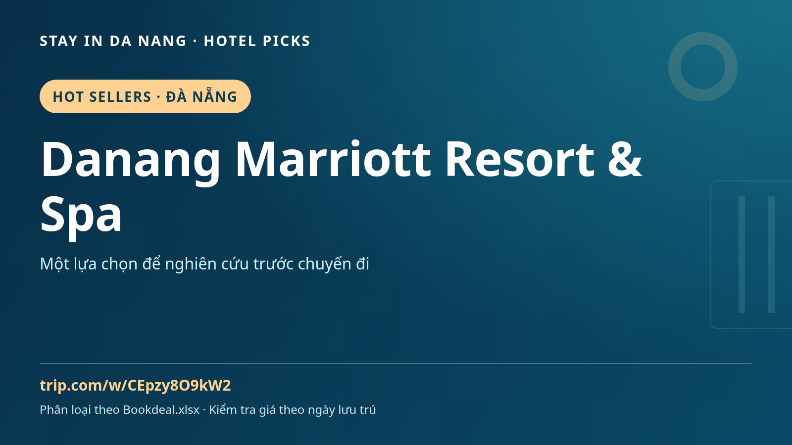

Danang Marriott Resort & Spa | Übernachten in Da Nang, Vietnam: Reiseführer
Eine Reise nach Da Nang geplant? Nehmen Sie Danang Marriott Resort & Spa in den Unterkunftsvergleich auf und lassen Sie Zeit für Essen, Kultur und Ausflüge in Zentralvietnam.

So prüfen Sie Danang Marriott Resort & Spa
Zuerst Lage und Route abgleichen. Aktuelle Bewertungen, Zimmerfotos, Stornierung, Frühstück und Verkehr prüfen. Ausstattung, Preis und Verfügbarkeit hängen von Datum und Zimmer ab: auf der Buchungsseite bestätigen, nicht aus Namen oder Werbung ableiten.
Ideen rund um Da Nang
Zeit für My Khe, den Han-Fluss und einen eigenen Ausflug nach Hoi An lassen. Das garantiert keine Nähe des Hotels. Daten vergleichen, Flughafentransfer und örtliche Wege vorher planen und Pausen vorsehen.
Vor der Buchung
- Adresse und geplante Fahrten bestätigen.
- Zimmer, Gästezahl, Mahlzeiten, Steuern und Stornierung vergleichen.
- Verfügbarkeit und Endpreis für die eigenen Daten prüfen.